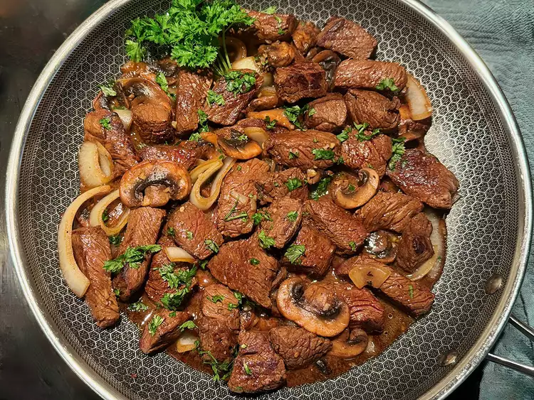

Home
Garlic Butter Steak Bites with Mushrooms

Description
Garlic butter steak bites are tender, juicy pieces of steak seared to
perfection and coated in a rich, buttery garlic sauce. Cooked quickly in
a hot skillet, they develop a flavorful crust while staying succulent
inside.
Ingredients
-
Marinade:
- 1/4 cup coconut aminos or light soy sauce
- 2 tablespoons red wine vinegar
- 1 tablespoon olive oil
- 1/2 teaspoon salt
- 1/2 teaspoon freshly ground black pepper
-
Steak:
- 1 1/2 pounds sirloin, cut into 1-inch pieces
- 3 tablespoons unsalted butter, divided
- 1 tablespoon minced garlic
- 1 cup sliced mushrooms
- 1/2 cup 1/2-inch-thick onion slices
-
1 tablespoon minced fresh parsley, plus more for garnish
(optional)
Steps
-
Combine coconut aminos, red wine vinegar, 1 tablespoon olive oil,
salt, and pepper in a large resealable plastic bag. Seal and gently
squeeze to mix.
-
Add steak pieces to the marinade, remove air, and seal. Move the steak
around to coat evenly. Refrigerate for 15 to 20 minutes (no longer
than 1 hour).
-
Melt 2 tablespoons butter in a microwave-safe dish, stir in minced
garlic, and set aside.
-
Drain marinade from steak and gently blot pieces with paper towels.
-
Heat remaining butter in a large skillet over medium-high heat until
sizzling.
-
Place steak pieces in a single layer and sear until browned, about 1
to 2 minutes per side. Cook in batches if necessary. Remove steak from
skillet, tent with foil, and set aside to rest.
-
Add mushrooms and onions to the same skillet. Stir frequently for
about 2 minutes until they begin to brown. Add 2 tablespoons water if
the skillet is dry and reduce heat to medium.
-
Add garlic butter to the skillet and cook until vegetables are tender,
about 3 to 5 minutes.
-
Return steak and accumulated juices to the skillet, stirring to coat
everything in the garlic butter.
-
Sprinkle parsley over the dish and remove from heat. Garnish with
additional fresh parsley if desired.